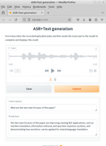

Expertise
Spectral data analysis

For more than fifteen years, we have developed and deployed software that takes advantage of machine learning models to predict properties of plant and soil samples, using spectra from various instruments: near-infrared (NIR), mid-infrared (MIR), laser-incuded breakdown spectroscopy (LIBS) and X-ray fluorescence (XRF).
For decades, many organizations have relied on global methods like partial least squares regression(PLS) for their modeling. However, global methods do not perform well with complex data derived from, for instance, soil samples. From the start, our software took advantage of locally weighted learning, achieving much better results.
In recent years, we have been able to push the boundaries even further, by adopting advanced modeling techniques using deep learning.
Our commercial S3000 software can not only be used for building models on your data, but also for integrating into your business processes.
Image processing
{kind=link}
With the advent of frameworks like Tensorflow and PyTorch, deep learning techniques became more accessible. Many cutting edge algorithms and libraries have complex dependencies that not only interfer with each other, but also change frequently. These libraries are often geared towards academic experimentation and not production-ready. By employing containerization offered by Docker and custom extensions, we are able to deploy these frameworks in production environments (for training and inference).
We have experience in the following areas:
image classification
object detection
instance segmentation
image segmentation
Natural language processing
{kind=link}
OpenAI pushed the envelop with their ChatGPT models and how models can chat naturally with humans. Only very few organizations are in a position nowadays to build such large language models (LLMs), as they require not only huge amounts of data but also massive hardware (Meta's Llama 3.1 was trained on 16,000 H100 GPUs). However, a lot of these models can be used locally and, if necessary, further fine-tuned. Smaller variants of the models, which are still very capable, can even be run on consumer-grade hardware. That way, you can make sure that your data stays local and confidential (data sovereignty).
We can work with you in the following domains:
automatic speech recognition
small and large language models (SLMs/LLMs)